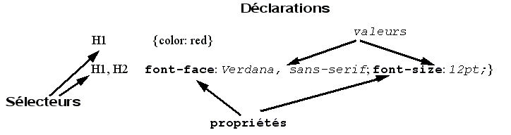

C S S
C S S
Cascading Style Sheet
Les bases des CSS
Les CSS (Cascading Style Sheets en anglais, ou « feuilles de style en cascade ») sont le code utilisé pour mettre en forme une page web. Les bases des CSS présentent ce qu'il faut savoir pour commencer. Nous répondrons à des questions comme : Comment rendre mon texte rouge ou noir ? Comment faire apparaître mon contenu à tel endroit de l'écran ? Comment décorer ma page web avec une image ou une couleur d'arrière-plan ?
Donc, que sont les CSS, réellement ?
De la même façon que HTML, CSS n'est pas vraiment un langage de programmation. C'est un langage de feuille de style, c'est-à-dire qu'il permet d'appliquer des styles sur différents éléments sélectionnés dans un document HTML. Par exemple, on peut sélectionner tous les éléments d'une page HTML qui sont paragraphes et afficher leurs textes en rouge avec ce code CSS :
p {
color: red;
}
Faisons un essai : copiez ces trois lignes de code CSS dans un nouveau fichier dans votre éditeur de texte, puis sauvegardez le fichier sous le nom style.css dans votre répertoire styles.
Pour que cela fonctionne, il faut appliquer le CSS au document HTML, sinon la mise en forme décrite dans le fichier CSS n'affectera pas l'affichage de la page HTML dans la navigateur (si vous n'avez pas suivi toutes les étapes pour arriver ici, vous pouvez lire l'article Gérer les fichiers et Les bases du HTML pour savoir par où commencer.
- Ouvrez votre fichier index.html et copiez la ligne suivante quelque part au sein de l'élément head (c'est-à-dire entre les balises head> et (/head)) :
(link href="styles/style.css" rel="stylesheet" type="text/css") - Sauvegardez index.html puis chargez-le dans votre navigateur. Vous devriez obtenir quelque chose comme :

Si le texte de votre paragraphe s'affiche en rouge, félicitations ! Vous venez d'écrire votre premier CSS fonctionnel !
Remarque : < = ( et > = ) ⚠
Anatomie d'une règle CSS
Regardons un peu plus en détails ce que nous avons écrit en CSS :
Cette structure s'appelle un ensemble de règles (ou seulement « une règle »). Les différentes parties se nomment :
Sélecteur :
C'est le nom de l'élément HTML situé au début de l'ensemble de règles. Il permet de sélectionner les éléments sur lesquels appliquer le style souhaité (en l'occurence, les éléments p). Pour mettre en forme un élément différent, il suffit de changer le sélecteur.
Déclaration :
C'est une règle simple comme color: red; qui détermine les propriétés de l'élément que l'on veut mettre en forme.
Propriétés :
Les différentes façons dont on peut mettre en forme un élément HTML (dans ce cas, color est une propriété des éléments p). En CSS, vous choisissez les différentes propriétés que vous voulez utiliser dans une règle CSS.
Valeur de la propriété :
À droite de la propriété, après les deux points, on a la valeur de la propriété. Celle-ci permet de choisir une mise en forme parmi d'autres pour une propriété donnée (par exemple, il y a d'autres couleurs que red pour la propriété color).
Les autres éléments importants de la syntaxe sont :
- chaque ensemble de règles, à l'exception du sélecteur, doit être entre accolades ({}).
- pour chaque déclaration, il faut utiliser deux points (:) pour séparer la propriété de ses valeurs.
- pour chaque ensemble de règles, il faut utiliser un point-virgule (;) pour séparer les déclarations entre elles.